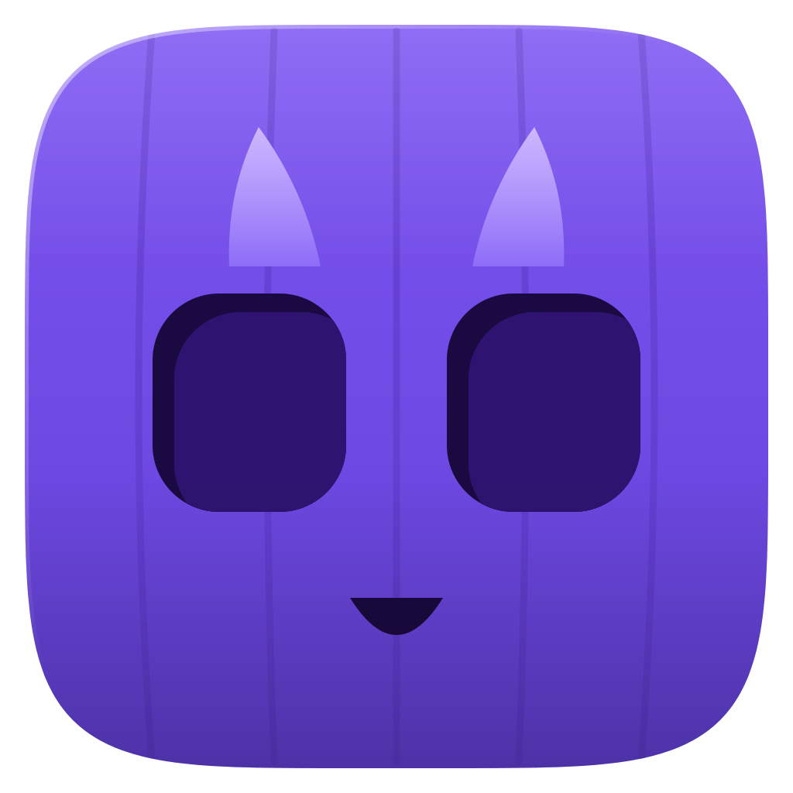
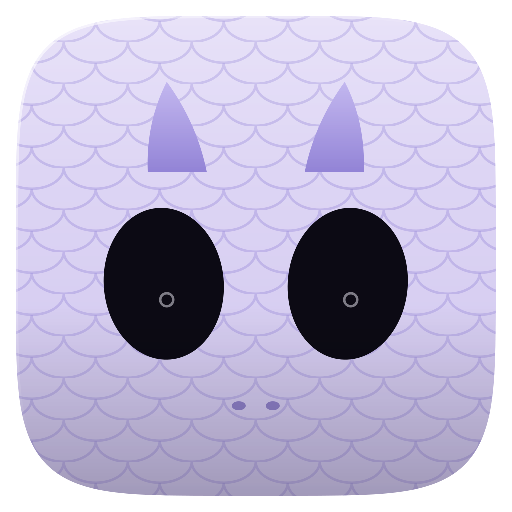
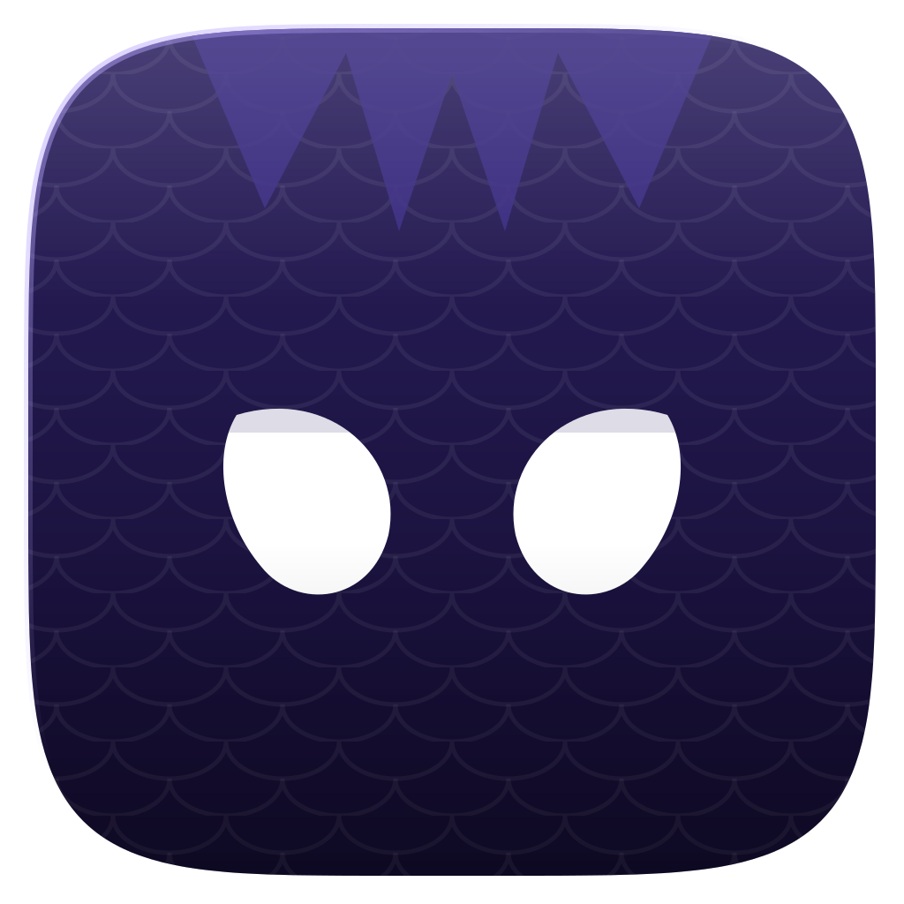
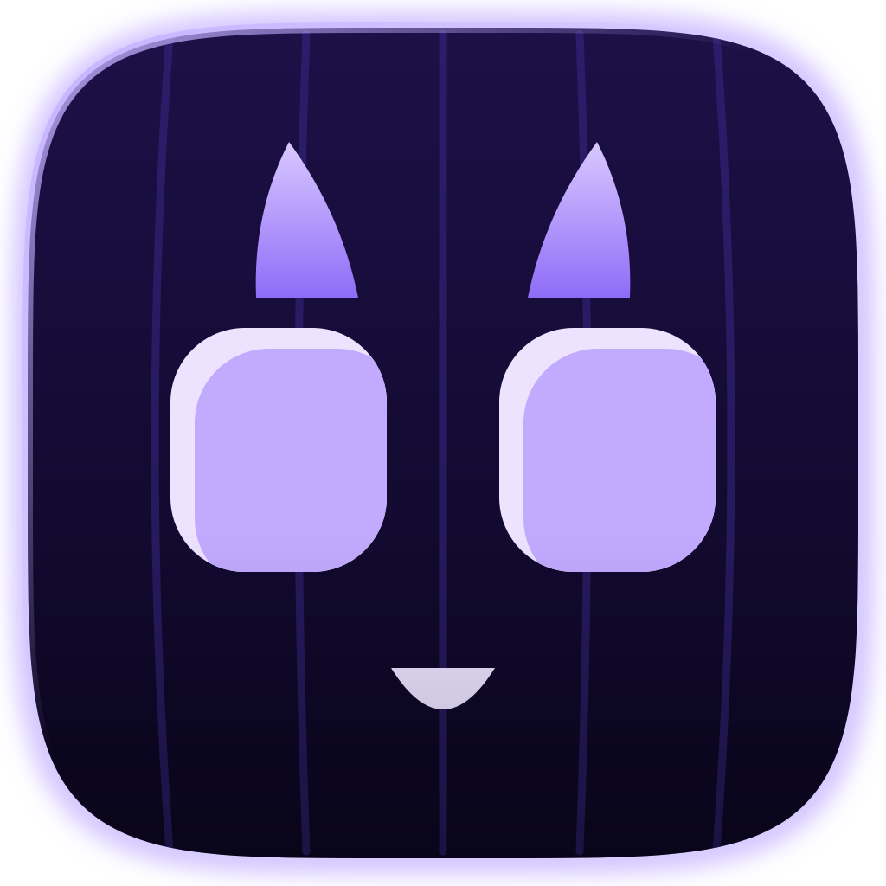
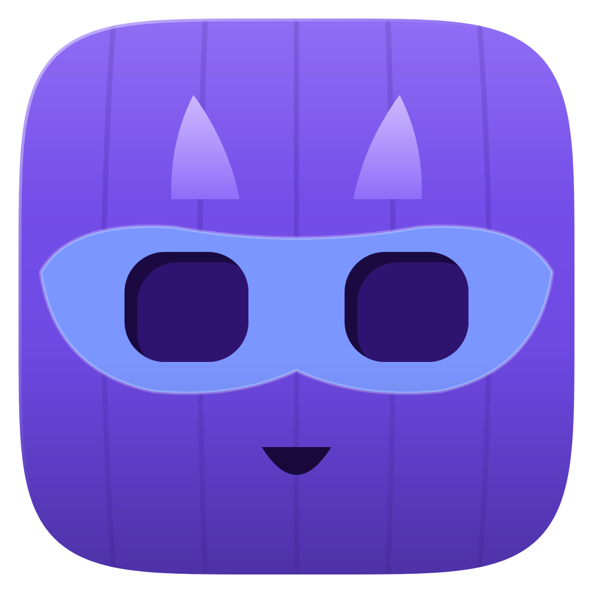
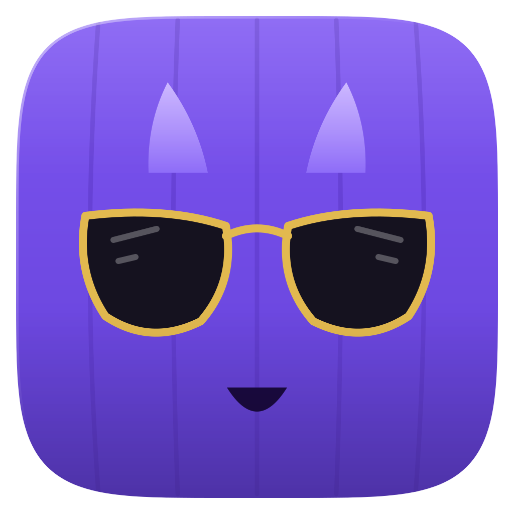

Candidatos (tile = rosto)

A Abóbora
B Múmia
C Gota em tile
A no escuroProva por gênero (o dragão continua roxo, só o acessório muda)

A + Heroes
A + CrimeAdaptive icon do candidato A (a linha tracejada é a área segura de 66dp)
Legibilidade em 144, 96, 72 e 48 px
A Abóbora
B Múmia
C Gota em tile